Kimi K2：开放式智能体智能
论文发布日期
作者： Kimi 团队
模型： Kimi-K2-Instruct
原文： arXiv:2507.20534
摘要
本文介绍 Kimi K2，一个每词元激活 320 亿参数、总参数约 1 万亿的混合专家大语言模型。团队提出 MuonClip 优化器，在 Muon 的高词元效率基础上加入新的 QK-Clip 技术，解决大规模训练不稳定。借助 MuonClip，K2 在 15.5 万亿词元的预训练中没有出现一次损失尖峰。
后训练采用多阶段流程，重点包括大规模智能体数据合成，以及让模型通过真实和合成环境交互提升能力的联合强化学习。Kimi K2 在开放权重非思考模型中取得领先表现，尤其擅长智能体任务：Tau2-Bench 66.1、ACEBench 英文 76.5、SWE-bench Verified 65.8、SWE-bench Multilingual 47.3。它在不启用扩展思考的情况下，LiveCodeBench v6、AIME 2025、GPQA-Diamond、OJBench 分别达到 53.7、49.5、75.1、27.1。
图 1 汇总软件工程、竞赛编程、工具使用、数学与 STEM 的主要结果。团队公开基础模型和后训练检查点，以促进智能体智能研究与应用。
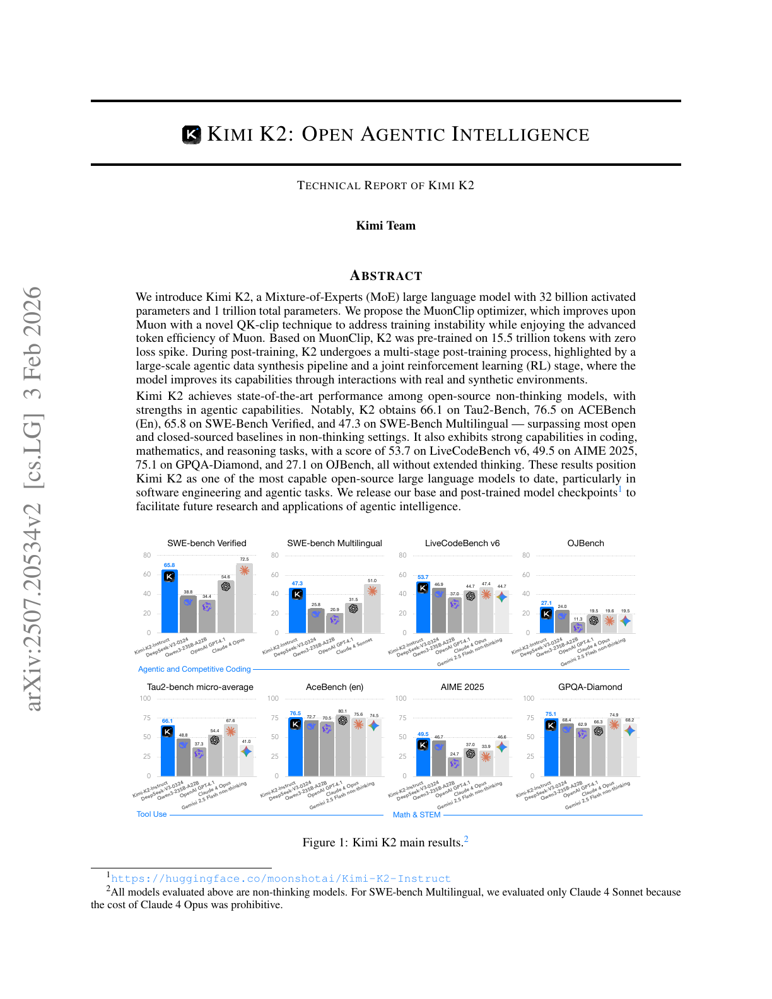
1 引言
大型语言模型正从静态模仿学习转向智能体智能：模型在复杂动态环境中自主感知、规划、推理和行动，通过交互学习、获得训练分布之外的新技能，并依据经验调整行为。这一方向有望突破静态人类数据的上限，影响工具使用、软件开发和现实世界自主系统。
智能体能力同时给预训练和后训练带来挑战。预训练必须在高质量数据有限的情况下建立广泛先验，因此“每个词元提供多少学习信号”的词元效率成为关键缩放系数。后训练则需把先验转成可执行行为；多步推理、长期规划和工具使用在自然数据中稀少，采集成本又高，需要可扩展地合成结构化、高质量交互轨迹，并结合偏好和自我批评的通用强化学习。
Kimi K2 的主要贡献包括：
- 提出 MuonClip，把高词元效率 Muon 与稳定机制 QK-Clip 结合，使 15.5 万亿词元预训练全程无损失尖峰。
- 建立大规模智能体数据合成流水线，在模拟和真实环境中系统地产生工具、智能体、任务和可验证轨迹。
- 构建同时使用可验证奖励和自我批评量规奖励的通用强化学习框架，使对齐从静态、封闭任务扩展到开放问题。
Kimi K2 是 1.04 万亿总参数、约 326 亿激活参数的 MoE Transformer。基础模型使用 15.5 万亿高质量词元训练；架构采用高稀疏 MoE 与多头潜在注意力，具体配置由缩放定律实验决定；基础设施同时优化训练吞吐与研究迭代效率。
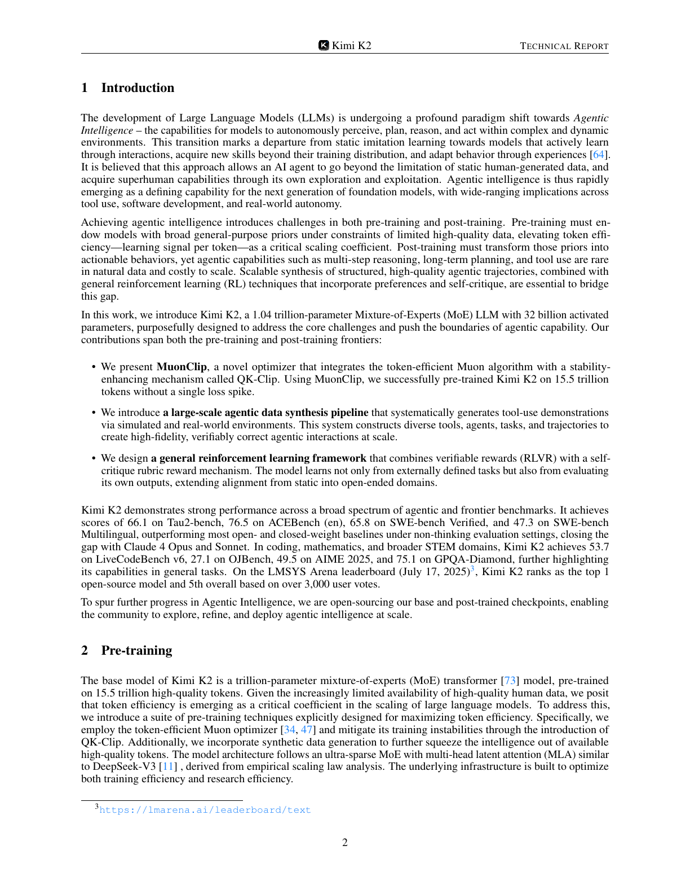
2 预训练
2.1 MuonClip：通过权重裁剪实现稳定训练
K2 采用高词元效率的 Muon 优化器，加入权重衰减与一致的更新 RMS 缩放。此前实验显示，在计算预算、模型规模和数据量相同的条件下，Muon 明显优于 AdamW。
但 Muon 扩展到大规模时更容易出现注意力 logit 爆炸。常见的 logit 软上限只在查询与键的点积计算后截断，点积本身仍可先增长到很大；QK-Norm 又难以直接用于多头潜在注意力，因为推理时并不会完整物化键矩阵。中等规模试验中，普通 Muon 很快让最大注意力 logit 超过 1000，导致损失尖峰甚至发散。
QK-Clip 为每个注意力头监控前向传播已计算的最大 logit $S_{\max}^h$。若超过阈值 $\tau$，就按 $\sqrt{\tau/S_{\max}^h}$ 同步缩放相应查询、键投影权重，把 logit 上界拉回阈值。该操作在 Muon 更新之后执行，只干预异常头；训练稳定后会自然停止触发。
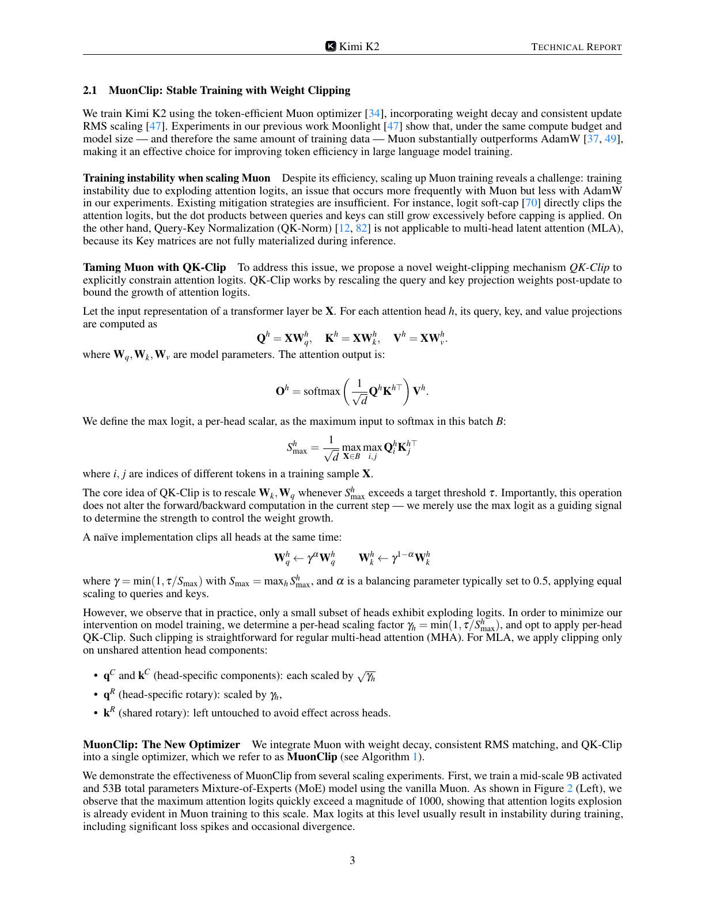
算法 1 给出完整 MuonClip：先对每个权重执行带动量的 Muon 更新与 Newton–Schulz 正交化，再逐层逐头检查 $S_{\max}^h$ 并缩放 Q/K 相关权重。K2 使用 $\tau=100$。训练早期最大 logit 被限制在 100，约完成 30% 步数后逐渐回落到常规区间，之后无需修改阈值。
附录 D 的小模型消融显示，即使使用更激进的 $\tau=30$，验证损失和下游结果也没有显著下降。K2 全程损失曲线平滑，没有可观察的尖峰，说明 MuonClip 能稳定扩展到万亿参数。
2.2 预训练数据：通过改写提高词元效用
词元效率指训练消耗每个词元所获得的性能提升；词元效用则是每个词元贡献的有效学习信号。简单重复数据容易过拟合并损伤泛化。K2 相比 K1.5 的重要改进，是通过合成改写放大高质量数据，而不是机械重复。
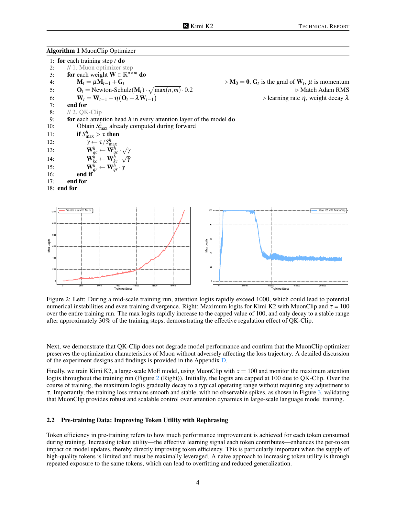
知识数据改写。 自然知识文本只训练一轮可能吸收不足，多轮重复又边际递减。流水线使用多种精心设计的提示，在保持事实的同时改变写作风格和观察角度；长文档按块自回归改写，每一段以上下文为条件，再拼接成完整文章，避免输出长度限制和信息丢失；改写后再执行语义忠实度核验。
SimpleQA 对比显示：原始文本重复 10 轮得 23.76；改写一次再重复 10 轮得 27.39；生成 10 个不同改写、各训练一轮得 28.94。大规模知识语料也显示类似收益，实际每个语料库最多改写两次。
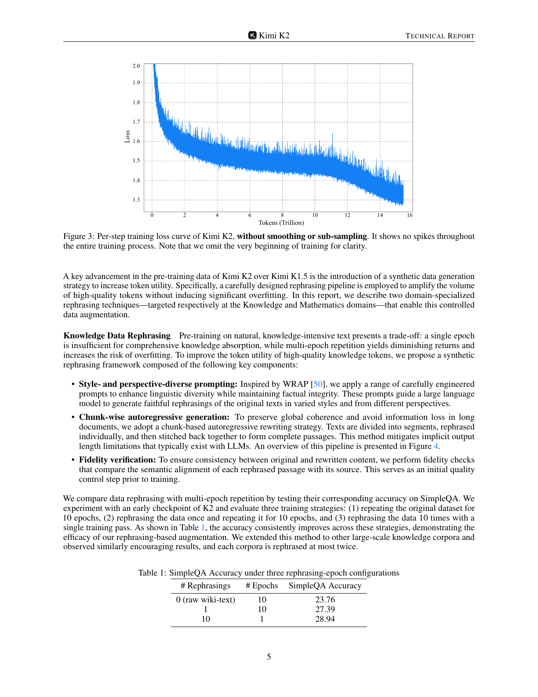
数学数据改写。 高质量数学材料被改写成“学习笔记”风格，并把其他语言的优质数学资料翻译为英文以增加多样性。合成数据继续扩展仍面临跨领域泛化、事实准确性、幻觉和规模化等问题。
总体数据。 预训练语料共 15.5 万亿词元，覆盖网页文本、代码、数学和知识四大领域。每个来源都经过正确性、质量和贡献验证，并通过针对性实验确保数据多样且有效。
2.3 模型架构
Kimi K2 总参数约 1.04 万亿、激活参数约 326 亿，使用多头潜在注意力；隐藏维度 7168，MoE 专家隐藏维度 2048。模型有 61 层、384 个专家，每词元激活 8 个，另有一个共享专家；注意力头数为 64，仅保留一个稠密层。
团队为 Muon 训练的 MoE 建立稀疏度缩放定律。稀疏度定义为总专家数与激活专家数之比。在固定激活参数和 FLOPs 时，提高总专家数持续降低训练与验证损失。达到相同 1.5 验证损失时，稀疏度 48 相比 8、16、32 分别节省约 1.69 倍、1.39 倍、1.15 倍 FLOPs。考虑基础设施复杂度，K2 选择稀疏度 48，即 384 个专家中激活 8 个。
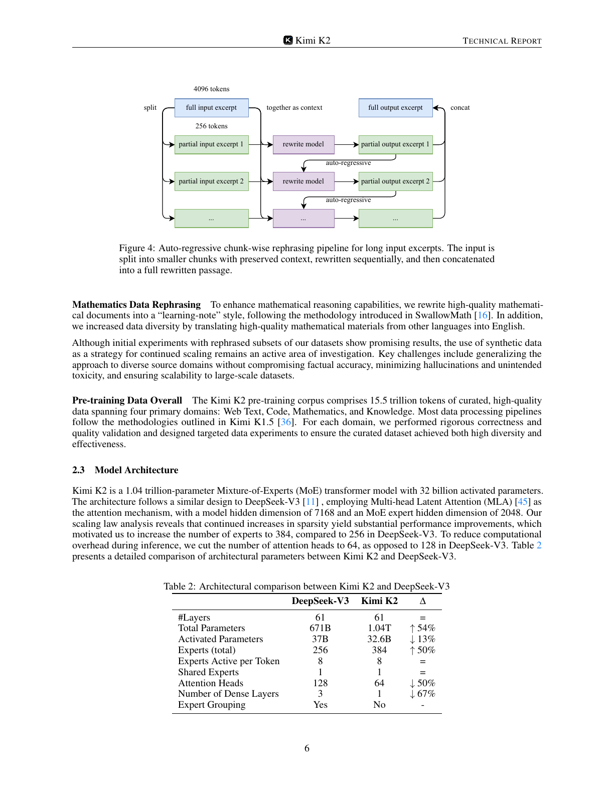
较多注意力头对验证损失只有约 0.5%–1.2% 的改善，却会显著增加长上下文推理成本。以 128K 序列为例，把头数从 64 增至 128、保持专家配置不变，会增加约 83% 推理 FLOPs。因此 K2 采用与层数近似的 64 个注意力头，而不再设置约两倍层数的头数。
2.4 训练基础设施
2.4.1 计算集群
K2 在 NVIDIA H800 集群上训练。每个节点有 2 TB 内存、8 张通过 NVLink/NVSwitch 互联的 GPU；跨节点使用 8 路 400 Gbps RoCE。
2.4.2 面向模型扩展的并行策略
为适应动态资源，训练配置支持任意 32 的倍数节点，不为单一集群规模定制。系统组合 16 路流水线并行及虚拟阶段、16 路专家并行与 ZeRO-1 数据并行。
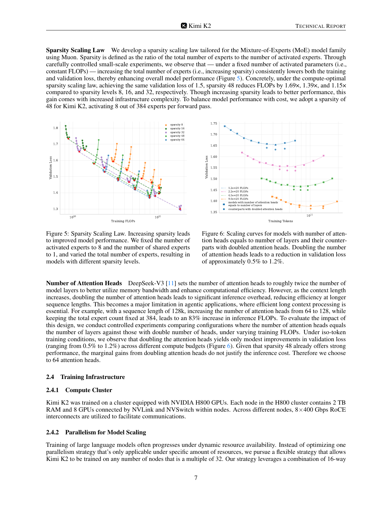
BF16 模型参数与 FP32 梯度累积缓冲约占 6 TB GPU 显存，分布在 256 GPU 的模型并行组。节点多时优化器状态分散；只有 32 个节点等较小配置时，部分状态卸载到 CPU。无论小规模试验还是正式训练，都复用相同并行配置，每张 GPU 约 30 GB 用于参数和状态，其余用于激活，提高研究迭代效率。
在交错 1F1B 流水线中增加预热微批，可把专家并行 all-to-all 通信与计算重叠。系统把权重梯度计算从每个微批的反向传播中解耦，并与流水线通信并行，使除预热阶段外的通信基本被隐藏。考虑万亿参数模型的额外内存和流水线气泡成本，没有采用需要双份参数与梯度内存的 DualPipe。
专家并行使用较小的 EP=16，以减少 64 注意力头下专家通信相对占比，同时放松专家均衡约束。
2.4.3 激活压缩
系统对 LayerNorm、SwiGLU、MLA 上投影和 MoE 下投影选择性重计算；把对数值不敏感的 MoE 上投影、SwiGLU 输入按 1×128 分块压缩为 FP8-E4M3，仅用于存储、不用于计算；其余激活流式卸载到 CPU 内存，并把上下载与计算、通信重叠。
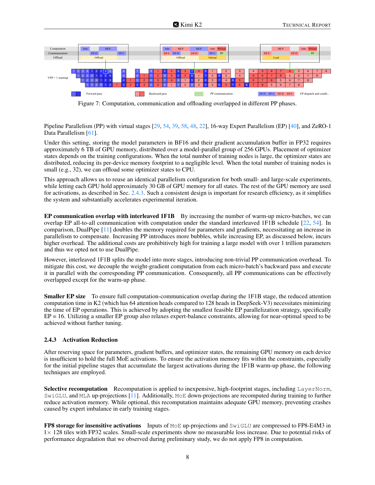
2.5 训练配方
预训练先以 4096 上下文使用 MuonClip 和 WSD 学习率日程处理 15.5 万亿词元。500 步热身后，前 10 万亿词元保持 $2\times10^{-4}$ 学习率；之后 5.5 万亿词元以余弦方式降到 $2\times10^{-5}$。权重衰减始终为 0.1，全局批量为 6700 万词元。
末期先退火，再激活长上下文。批量保持不变，学习率从 $2\times10^{-5}$ 降到 $7\times10^{-6}$；先以 4K 长度训练 4000 亿词元，再以 32K 长度训练 600 亿词元，并用 YaRN 把上下文扩展至 128K。
3 后训练
3.1 监督微调
后训练继续使用 Muon。指令数据集横跨多领域，遵循“最大化提示多样性、保证高响应质量”两项原则。不同领域采用人类标注、提示工程与验证相结合的专用流水线；候选回答由 K1.5 和内部专家模型生成，再由语言模型或人工评审过滤。
3.1.1 面向工具学习的大规模智能体数据合成
真实环境虽然反馈可信，但成本、复杂度、隐私和可访问性使其难以大规模构建。团队因此建立三阶段合成流水线：从真实 MCP 工具和模型合成工具建立工具规格库；为采样工具集生成相应智能体、任务和量规；再让智能体通过多轮工具调用完成任务，形成轨迹。
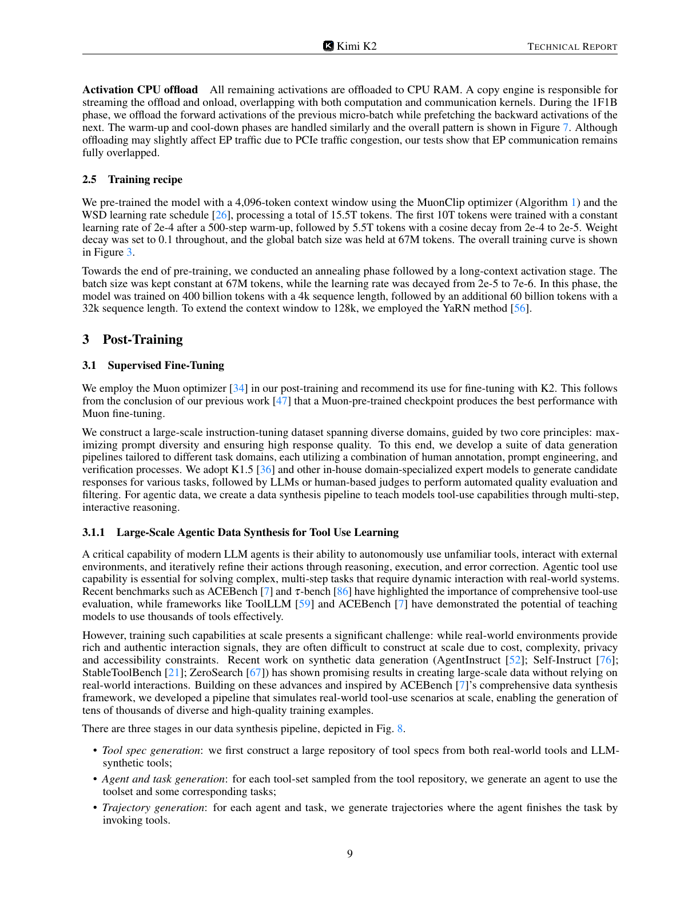
工具规格经过领域分类和 t-SNE 分布检查，以确保覆盖真实应用。任务为每个智能体定义目标和成功量规；工具模拟器像世界模型一样执行调用、维护持续状态，并以受控随机性产生成功、部分失败和边界情况。语言模型裁判依据量规过滤轨迹，只保留达到成功条件的样本。
模拟环境便于扩展，却可能缺少真实度。因此代码和软件工程等要求精确执行的任务使用真实沙箱，运行代码、访问开发环境，并以测试通过率等客观指标反馈。两种环境结合，在规模、真实性和可验证性间取舍。
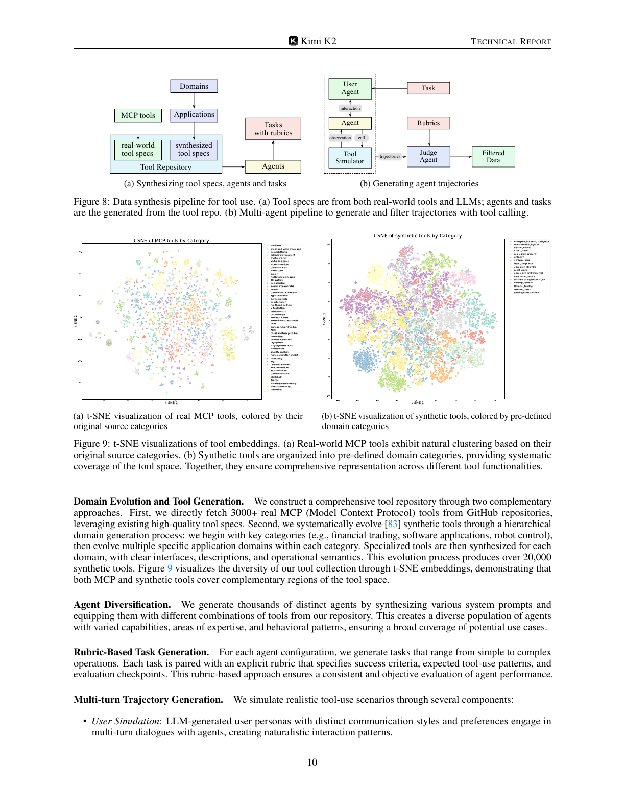
3.2 强化学习
3.2.1 可验证奖励环境
可验证奖励覆盖数学、指令遵循、忠实度、代码和软件工程等任务。数学题通过答案匹配或执行验证；指令遵循采用确定性规则与模型裁判双路核验，并加入反投机检查；训练提示来自专家设计、智能体式指令增强和针对失败边界的专用生成模型。
忠实度裁判在句子级识别缺少上下文证据的事实断言。代码数据混合开源与合成题，并用从预训练数据取得的人类单元测试增强奖励可靠性。软件工程环境从大量 GitHub issue 和 PR 构建，依托 Kubernetes 沙箱，支持一万以上并发实例。
安全训练从人工整理的风险提示起步，再用攻击模型、目标模型和裁判模型构成的自动演化流水线模拟复杂提示变体；每次交互依据任务量规判定是否暴露漏洞。
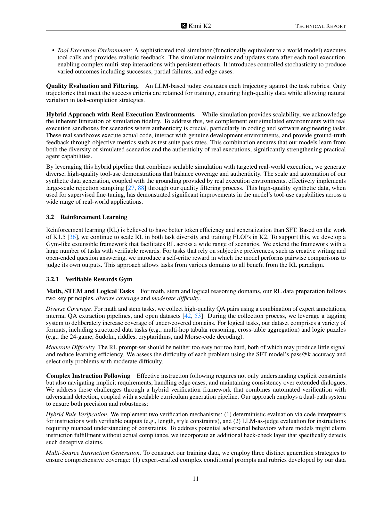
3.2.2 超越可验证任务：自我批评量规奖励
为把对齐扩展到帮助性、创造性、推理深度、事实性和安全等主观目标，K2 让评论模型依据量规比较同一提示的多个回答。量规组合核心价值、抑制奖励投机的规定性规则，以及针对具体指令的人工标准；在监督微调阶段先用公开和内部偏好数据建立评论能力。
强化学习过程中，可验证任务的在策略轨迹持续更新评论模型，把客观信号迁移到没有显式标准答案的复杂任务。评论标准随策略演化同步校准，形成闭环；这在用户意图、创意写作、复杂推理和语言理解等领域带来广泛改善。
3.2.3 强化学习算法
K2 沿用 K1.5 的策略优化。对问题 $x$，从旧策略采样 $K$ 个回答，使用样本平均奖励 $\bar r(x)$ 作为基线，并以策略比率的对数平方进行正则：
多领域联合强化学习另加入三项机制：按任务类型设置每样本最大词元预算，超长回答截断并惩罚，提高词元效率；把人工精选的高质量样本以辅助 PTX 损失加入目标，防止遗忘和对有限训练任务过拟合；让采样温度从高到低衰减，训练早期鼓励探索，后期转向稳定利用。
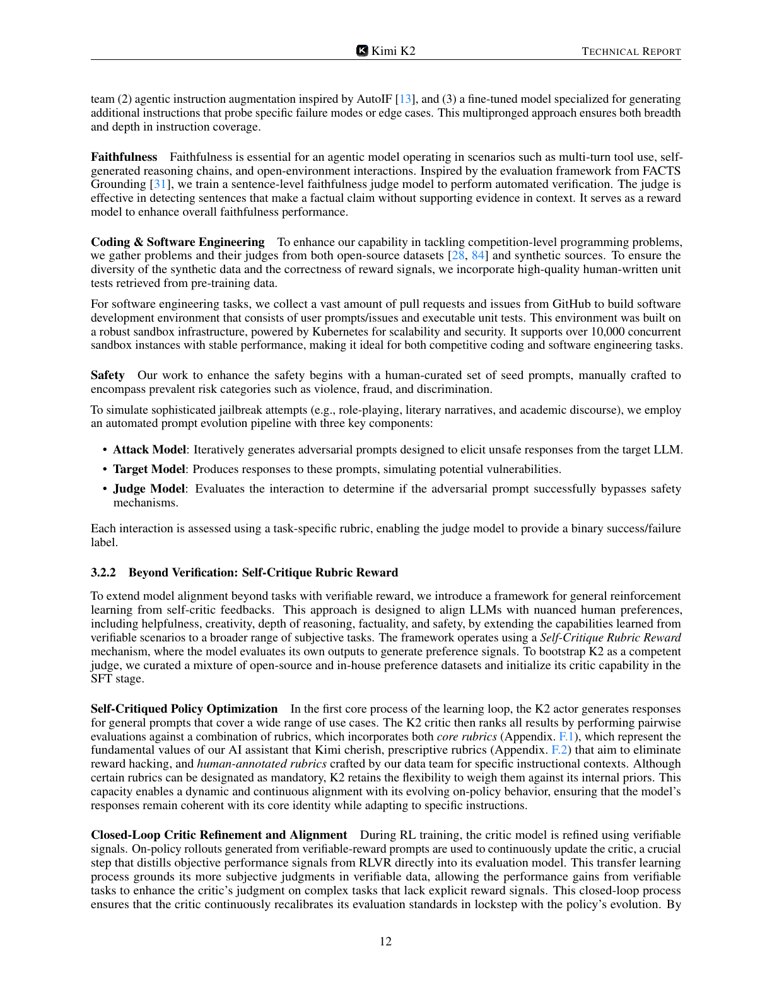
3.3 强化学习基础设施
3.3.1 共置架构
训练和推理引擎共置于同一批工作节点；一方工作时，另一方卸载或释放 GPU。中央控制器先调用推理引擎生成新数据，再启动训练引擎更新参数，并把新权重传回推理引擎进入下一轮。
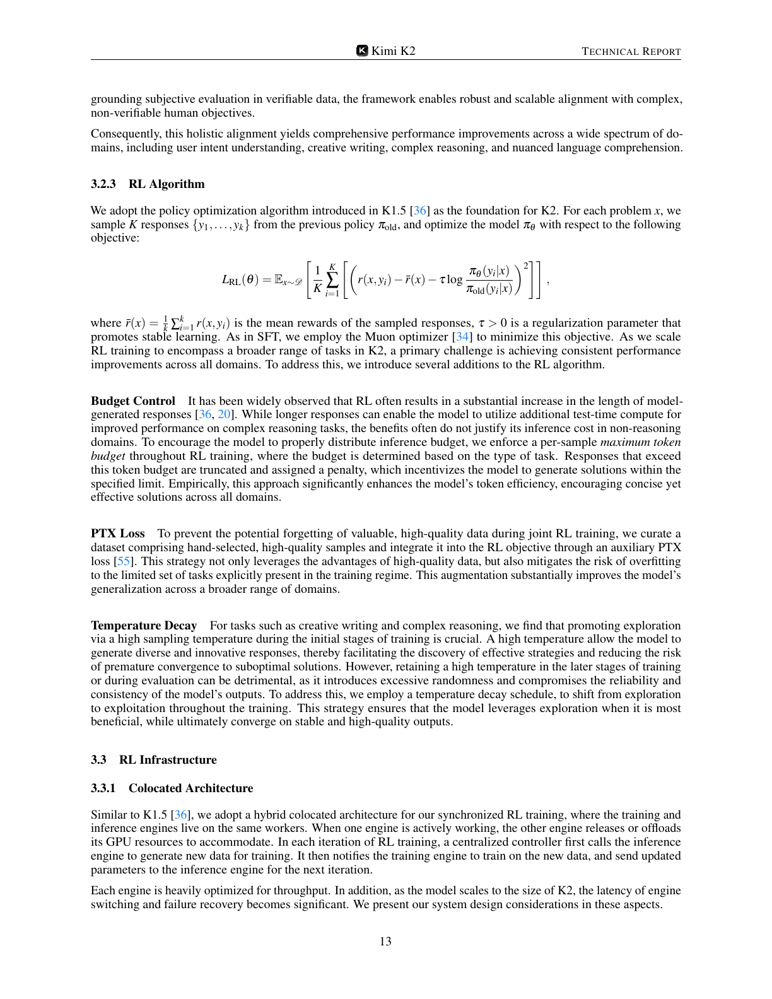
3.3.2 高效引擎切换
训练参数在轨迹阶段卸载到内存，恢复训练只需主机到设备传输；推理引擎则必须从采用不同分片方式的训练引擎取得新参数。万亿参数、海量设备下，依赖网络文件系统重分片需要每秒数 PB 聚合带宽，不现实。
团队在训练节点共置分布式检查点引擎：每个工作进程先取得本地参数，再在所有检查点进程间广播全量参数；各推理进程只读取自己需要的分片。为控制内存，参数逐项流水化更新。虽然传输量高于理论最优，但系统设计简单、训练和推理解耦，也减少同步开销、提高带宽利用率。K2 一次完整参数更新少于 30 秒。
3.3.3 高效启动
启动训练时，每个工作进程只从磁盘读取部分或不读取参数，再通过同伴广播，保证全体合计只读一份检查点。独立推理副本也通过检查点引擎启动，避免额外同步屏障；单个推理副本失败后可独立恢复。
3.3.4 智能体轨迹生成
长时程多轮任务常因虚拟机、代码解释器等环境反馈阻塞。系统把重环境部署成可独立扩容的服务，并通过大量并发轨迹摊薄延迟。对极长尾轨迹使用部分轨迹展开：暂停未完成任务，下一次强化学习迭代再恢复。统一环境接口借鉴 OpenAI Gym，便于快速接入新环境。
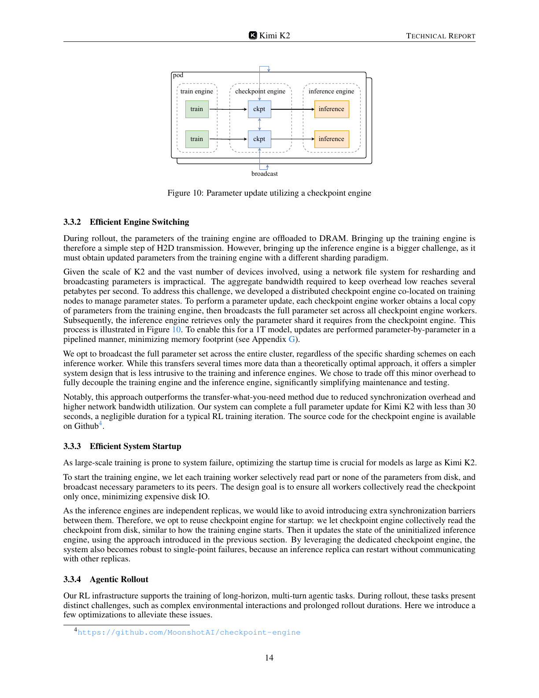
4 评测
4.1 后训练模型
4.1.1 设置
Kimi-K2-Instruct 的评测覆盖竞赛代码与软件工程、工具调用、数学科学与逻辑、长上下文、事实性、通用知识和指令遵循。所有对比都使用非思考模式，以排除额外测试时计算；常规输出上限 8192，SWE-bench Agentless 为 16384；长上下文上限 128K。高方差任务进行多次独立采样并取平均。
4.1.2 结果
智能体和竞赛编程是主要强项：SWE-bench Verified 单次智能体 65.8、多次尝试 71.6，SWE-bench Multilingual 47.3，SWE-Lancer 39.1，LiveCodeBench v6 53.7，OJBench 27.1。工具任务 Tau2-Bench 微平均 66.1，ACEBench 76.5。
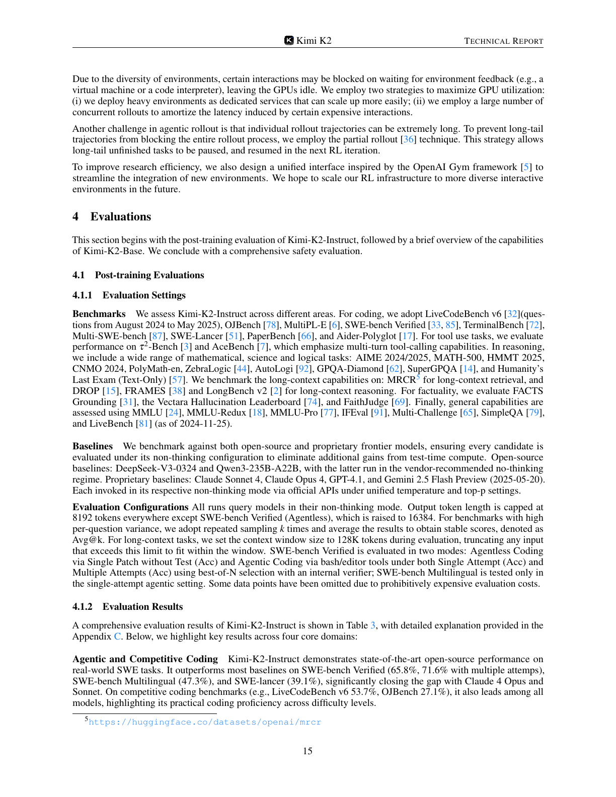
表 3 给出完整结果。除软件工程与工具使用外，K2 在 AIME 2024、AIME 2025、MATH-500、GPQA-Diamond 上分别达到 69.6、49.5、97.4、75.1；MMLU、MMLU-Redux、IFEval、Multi-Challenge 分别为 89.5、92.7、89.8、54.1；FACTS Grounding、HHEM、FaithJudge 分别为 88.5、98.9、92.6。
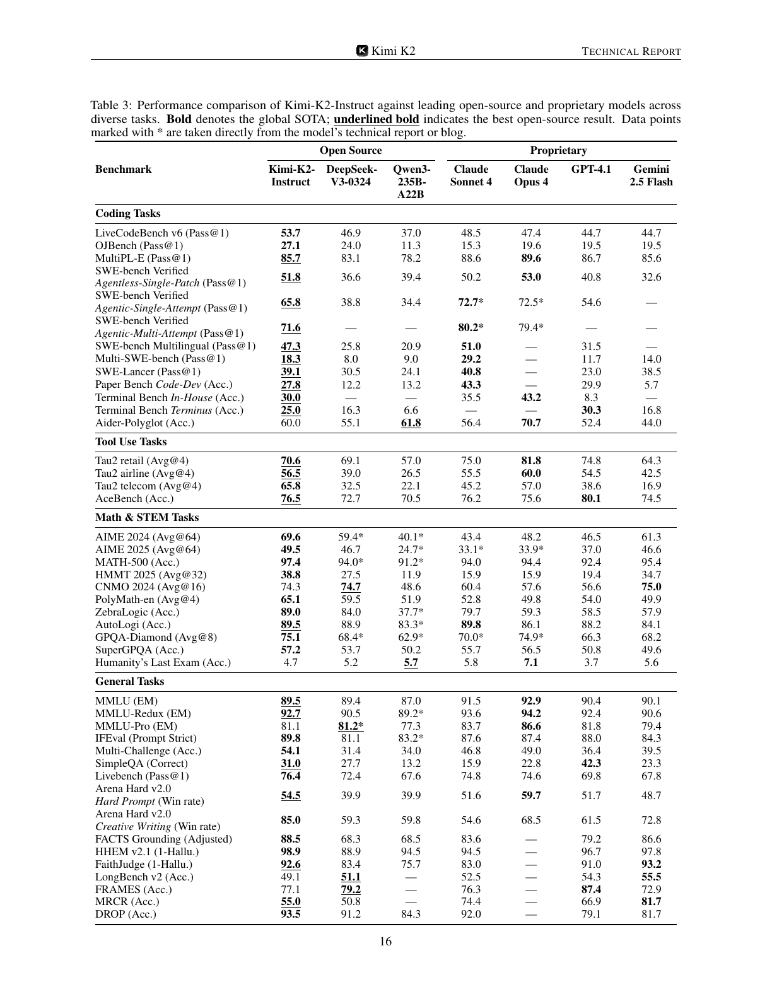
多轮工具使用的强结果说明模型能在有约束、可落地的场景中编排工具。短长上下文通用能力也较均衡；LMSYS Arena 截至 2025-07-17 的 3000 多票中，K2 是排名最高的开放模型、总榜第五。
4.2 基础模型
基础模型评测覆盖英文通用理解、代码、数学和中文。统一使用内部派生自 LM Evaluation Harness 的框架；部分选择题用困惑度评测，其余用生成式评测。
Kimi-K2-Base 在 12 个英文任务中的 10 个领先，MMLU、MMLU-Pro、MMLU-Redux、SuperGPQA、SimpleQA 分别为 87.79、69.17、90.17、44.67、35.25。代码方面，CRUXEval-I/O、LiveCodeBench v6、EvalPlus 分别为 74.00、83.50、26.29、80.33；数学 MATH、GSM8K、GSM8K-Platinum 分别为 70.22、92.12、94.21。
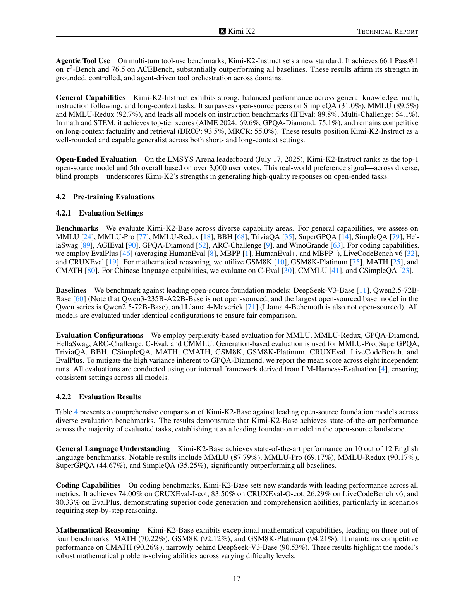
中文评测 C-Eval、CMMLU、CSimpleQA 分别达到 92.50、90.90、77.57。表 4 保留基础模型跨英文、代码、数学和中文的完整对照。
4.3 安全评测
团队使用自动化红队框架，对多类风险、隐私与安全场景和多种提示攻击策略生成测试，并辅以多轮人工复核。考虑模型输出随机性，每个“类别—策略”组合生成多个样本；支持双语的组合同时使用中英文。完整类别、策略和各模型通过率见原页表 5、表 6。
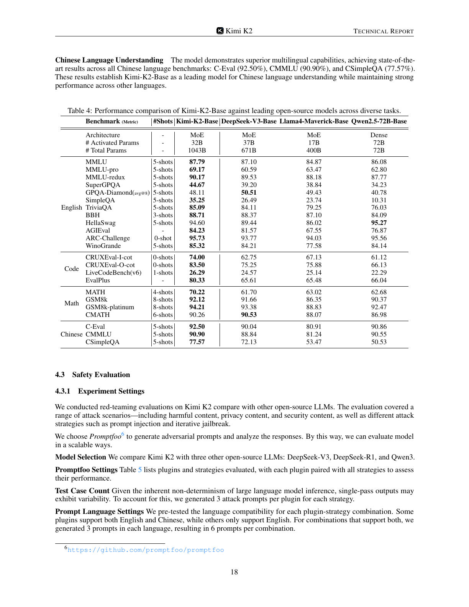
结果显示，不同攻击策略效果并不单调：简单编码变换影响较小，渐进式多轮攻击通常更有效；复杂改写有时会使原提示失去含义，反而不能反映真实风险。人工评审不可避免带有主观性，部分涉及外部工具或 API 的测试也更适合智能体模型，而不是纯基础语言模型。
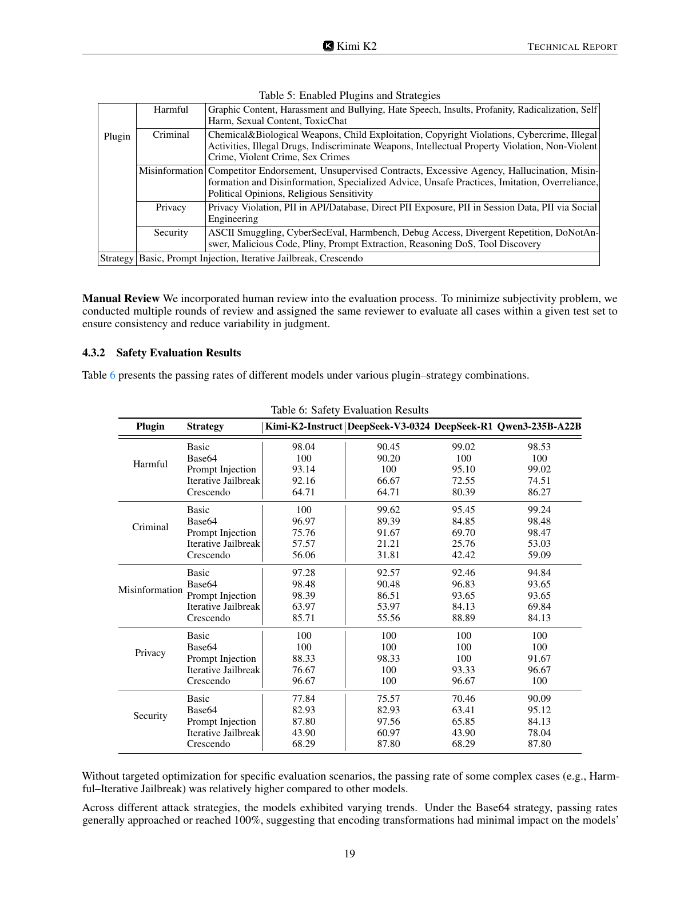
5 局限
面对困难推理或不清晰工具定义时，K2 可能生成过多词元，造成截断或不完整工具调用；不必要地启用工具也可能让部分任务性能下降。构建完整软件项目时，一次性提示的成功率低于配合智能体编程框架。
6 结论
Kimi K2 是面向智能体智能的 1T 开放权重 MoE。MuonClip 与 15.5 万亿高质量词元带来稳定、可扩展的预训练；后训练结合大规模合成工具数据、可验证奖励与自我批评反馈。模型在智能体、软件工程、代码和推理基准上取得很强结果。
7 致谢
团队感谢 OpenHands 与 Multi-SWE-bench 团队协助评测 SWE-bench Verified 和 Multi-SWE-bench。
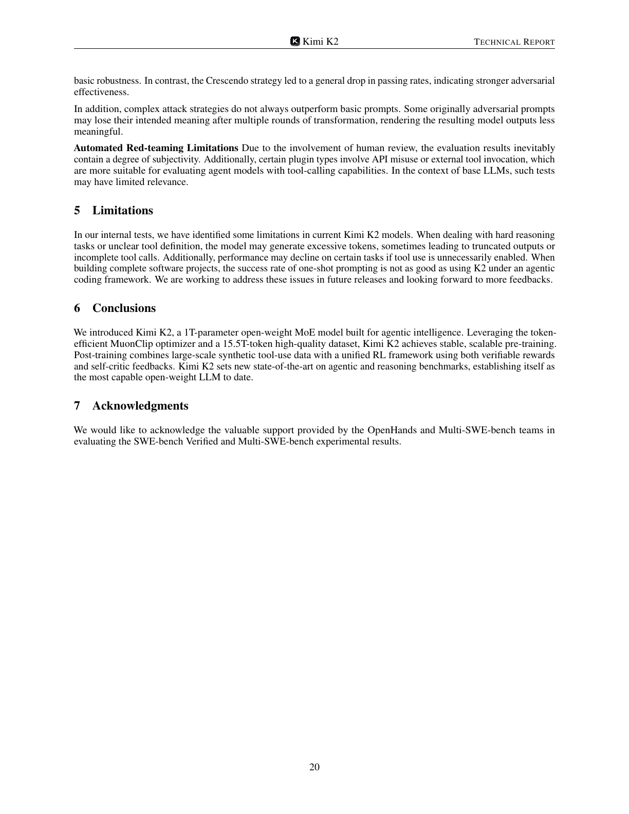
参考文献
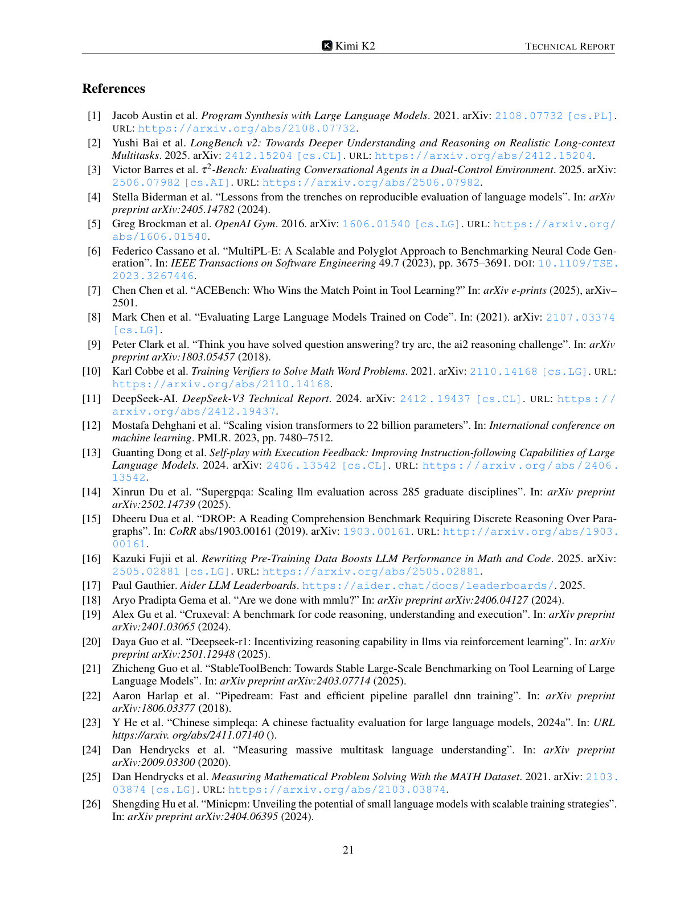
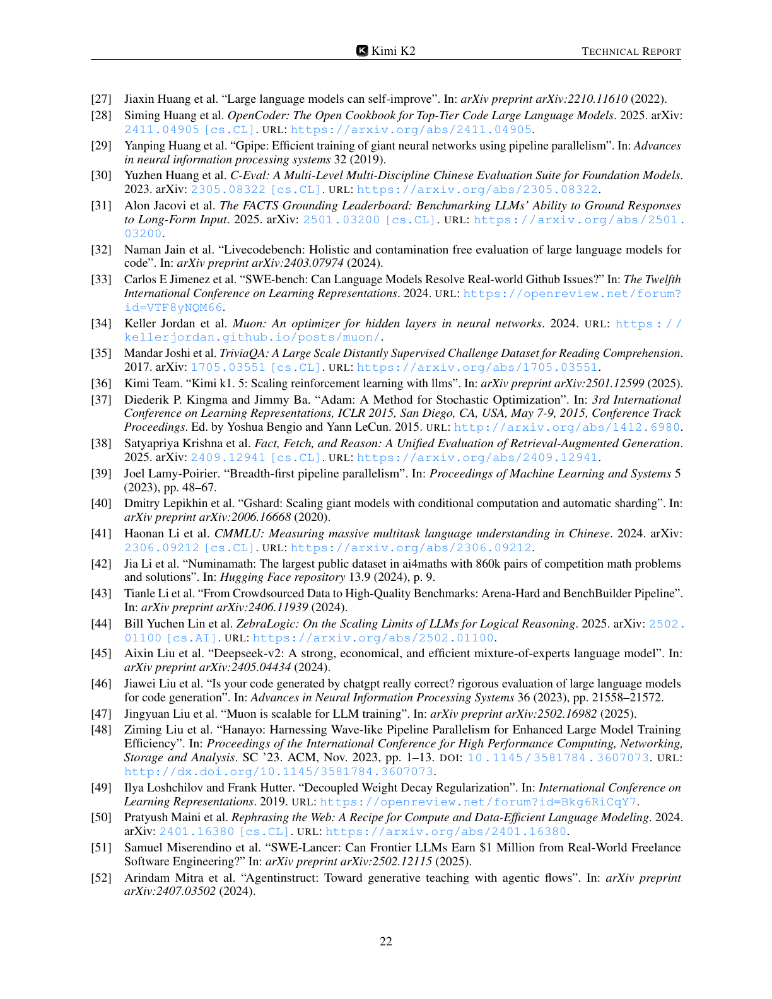
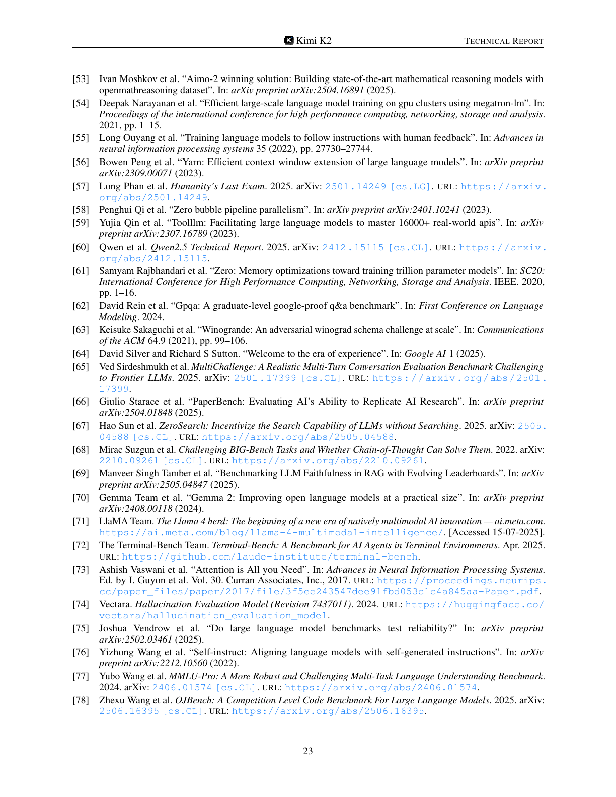
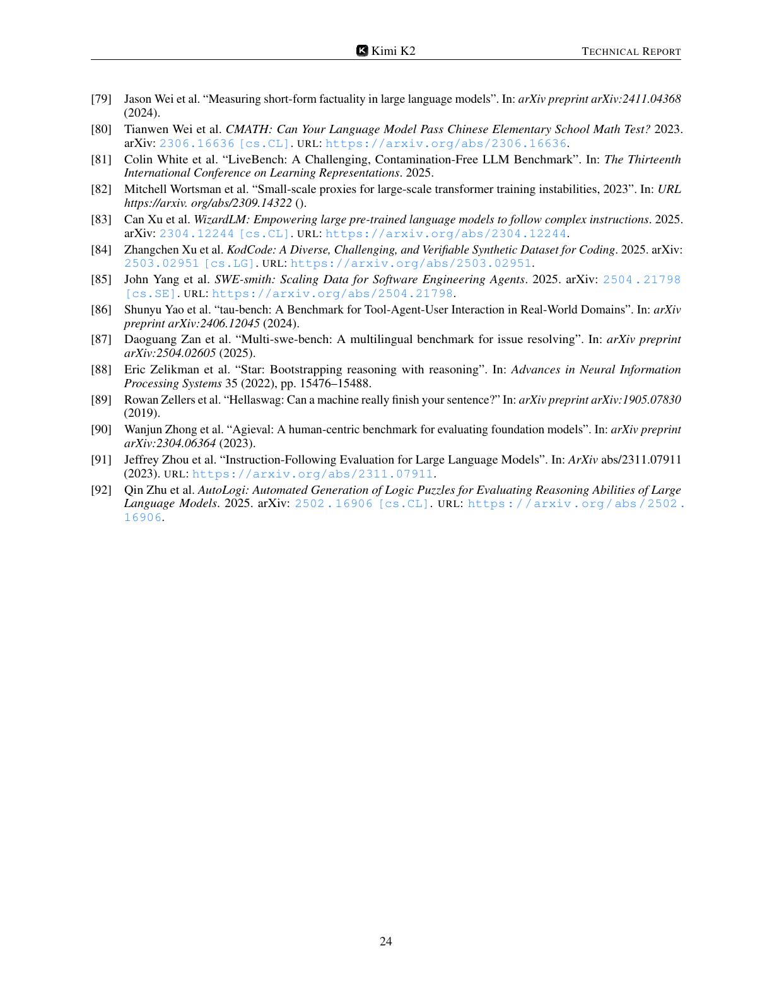
附录 A 贡献者
作者按姓氏字母顺序排列，完整名单保留在原页。
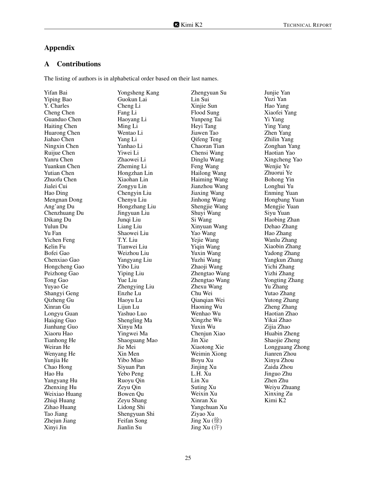
附录 B 工具调用词元模板
工具调用由三部分组成：工具声明消息定义可用工具及参数模式；助手消息中的调用段编码调用请求；工具结果消息封装执行结果。声明默认使用 TypeScript，因为类型系统完整、表达简洁；部分训练数据也使用兼容 OpenAI Chat Completions API 的 JSON，便于第三方框架接入。
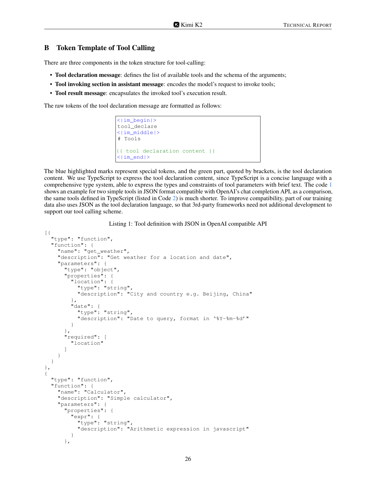
单轮回答可并行包含多个工具调用；每个调用有 functions.{tool-name}:{counter} 形式的唯一 ID，计数器从 0 递增。受约束解码模块 enforcer 会在工具调用段开始后强制后续词元符合模板，并保证 JSON 参数满足声明模式。工具结果消息再以调用 ID 与执行内容返回。
附录 C 评测细节
代码评测从 LeetCode、AtCoder 到 NOI、ICPC，另覆盖多语言编程、真实仓库修复、终端和论文复现。工具评测结合双控多轮环境与大规模双语 API 基准。数学、STEM 和逻辑评测覆盖竞赛题、研究生知识与自动逻辑题；通用评测还包括事实性、指令遵循和开放生成。
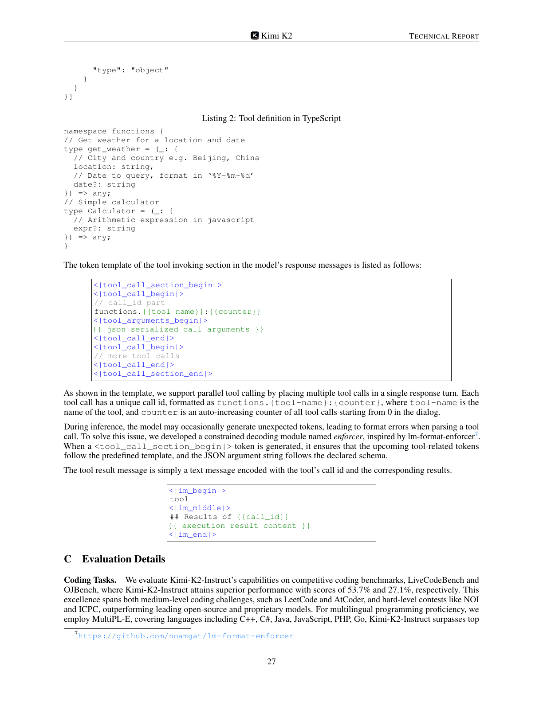
软件工程多次尝试模式达到 71.6，SWE-bench Multilingual 47.3，SWE-Lancer 39.1；PaperBench 27.8，TerminalBench 在内部智能体框架下 30.0，Aider-Polyglot 60.0。Tau2-Bench 微平均 66.1，ACEBench 76.5。数学、STEM、逻辑和一般任务的详细比较均沿用非思考模式。
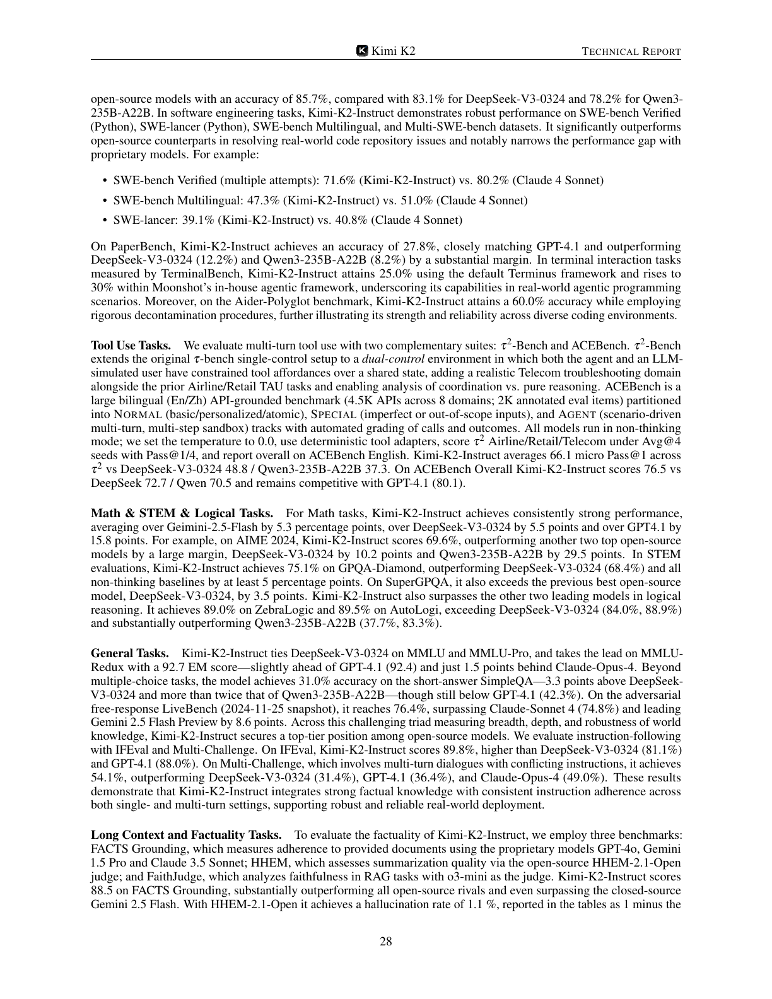
事实性方面，FACTS Grounding 88.5，HHEM 幻觉率 1.1%，FaithJudge RAG 幻觉率 7.4%。长上下文 DROP 为 93.5，MRCR 为 55.0；FRAMES 与 LongBench v2 分别 77.1、49.1。中文内部开放评测中，K2 对三个对比模型的胜率约为 59.6%–65.4%；公开 Arena 结果也验证了真实用户偏好。
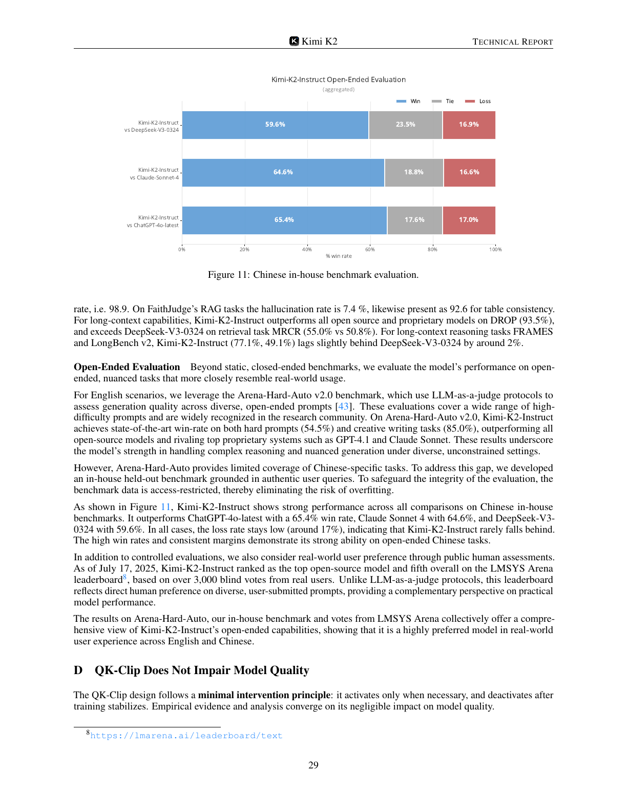
附录 D QK-Clip 不损伤模型质量
0.5B 激活、3B 总参数的小型 MoE 消融中，普通 Muon 与阈值 30 的 MuonClip 损失曲线几乎重合，下游结果也没有统计显著下降。K2 训练前 70000 步中，12.7% 注意力头至少触发一次；之后所有头的最大 logit 都降到 100 以下，QK-Clip 完全停止作用。逐头而非逐层裁剪进一步减少过度正则化。
附录 E Muon 更容易出现 logit 爆炸的原因
注意力 logit 上界主要受查询、键权重谱范数增长驱动。Muon 更新经矩阵符号运算后奇异值更均匀、有效秩更高；Adam 更新通常由少数较大奇异值主导、有效秩较低。较高有效秩让 Muon 权重与更新的奇异向量更容易对齐，相关奇异值会累加增长；注意力中的 $W_qW_k^\top$ 又会放大谱范数，因此更易产生 logit 爆炸。
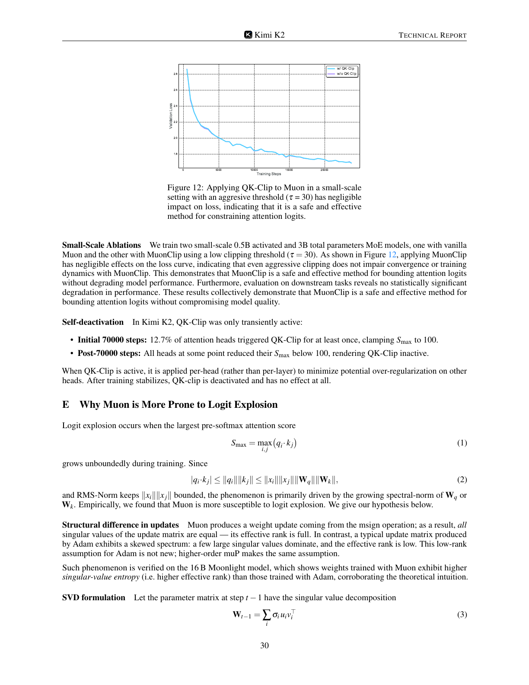
附录 F 通用强化学习评论量规
核心量规关注三方面：回答应简洁而完整地回应用户意图；对话应自然、连贯并按语境调整语气；互动应客观落地，避免无关元评论和讨好式夸奖。规定性量规还避免用开场赞美和自我表功影响评分。
该框架也有局限：过度惩罚自我限定、免责声明和保留表达，可能削弱认识论谦逊；偏好清楚、单一结论，可能让模型在模糊或开放问题上显得过度自信。未来需要更细致地校准不确定性。
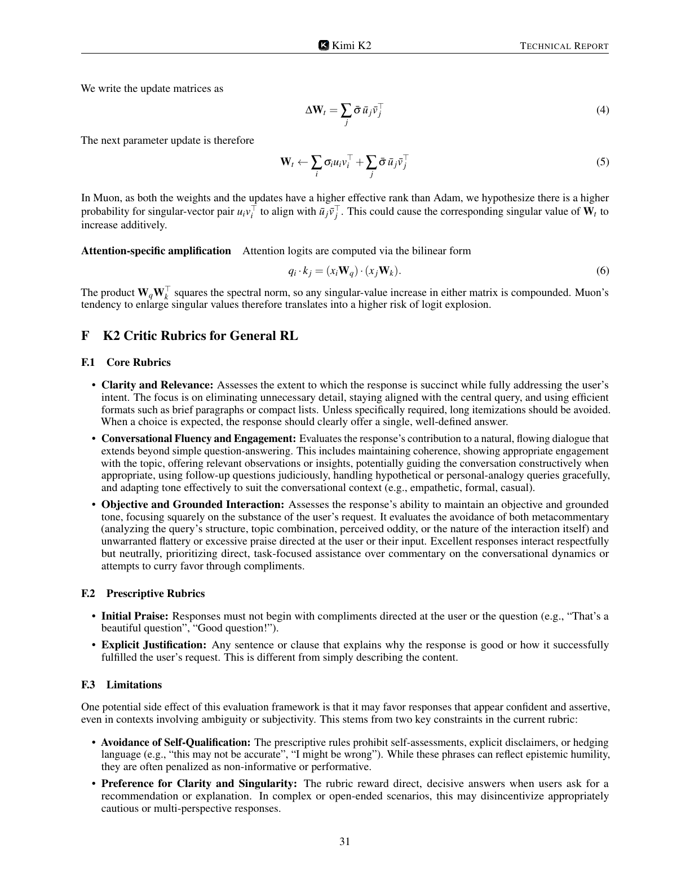
附录 G 强化学习引擎切换流水线
检查点引擎在每张 GPU 上管理三个等大缓冲区：一个用于主机到设备加载，两块 IPC 缓冲用于 GPU 间广播，并与推理引擎共享物理内存。理论上可形成 H2D、广播、重载三阶段流水线；但 H800 上并发 H2D 和广播会饱和 PCIe，因此实际使用两阶段：所有设备同步完成一次 H2D，再让广播与重载并行。大规模设备下参数分片很小，全量参数可一次放入 H2D 缓冲，同步开销趋于消失。
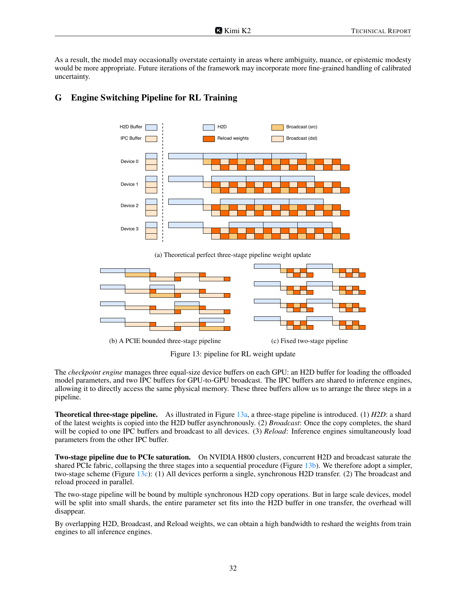